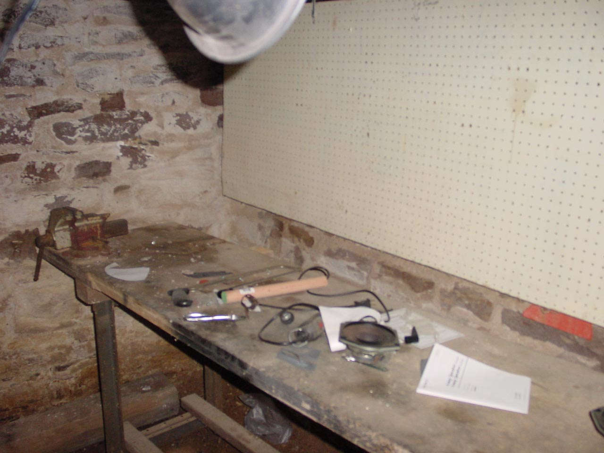

|  |
|
Featured in Kevin's tour of his basement is a separate room for his work activities. He doesn't have a thing on this workspace. While ducking the beams and tripping over electric cords being used to carry power from the only available and quite dirty source on the other side of the room, you can focus on the centerpiece of this area, the workbench. It features a pine top hammered on to some boards and table legs that appear to have been slapped together by someone lacking a basic understanding of woodworking. The entire design could be described as "organic" since it is neither square, nor sitting level, nor stable. A selection of tools that looks like they might successfully replace a light-bulb are available. As well as trash from a previous "unbox the car stereo speakers" project. The vice in the background is at least 30 years old and is as loose as a octogenarian whore. [ Look to the left at the wall | Back to by the stairs | What is that on the floor? | Look right to the archway to the lesser hall ] |